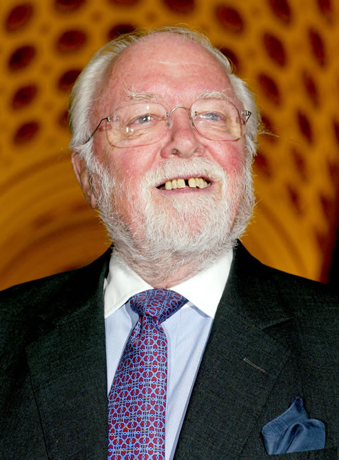
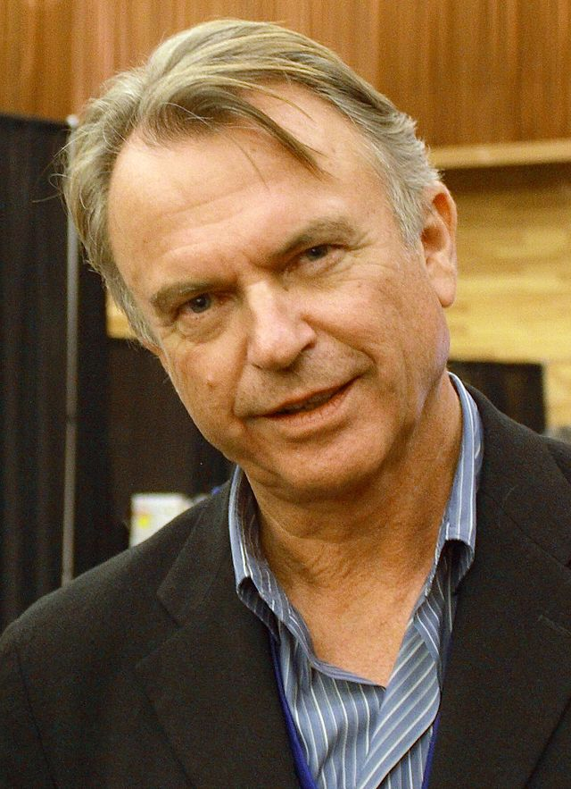
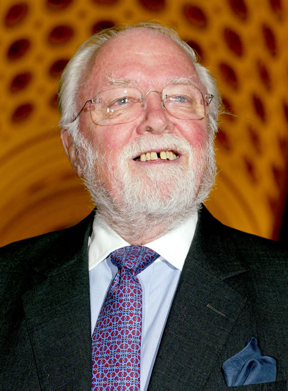
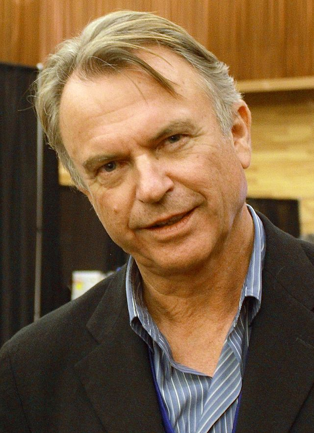
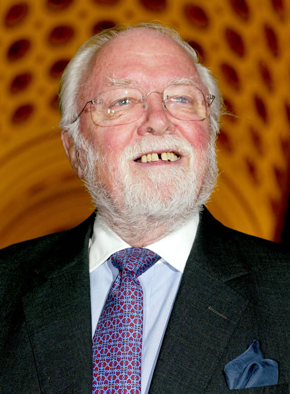
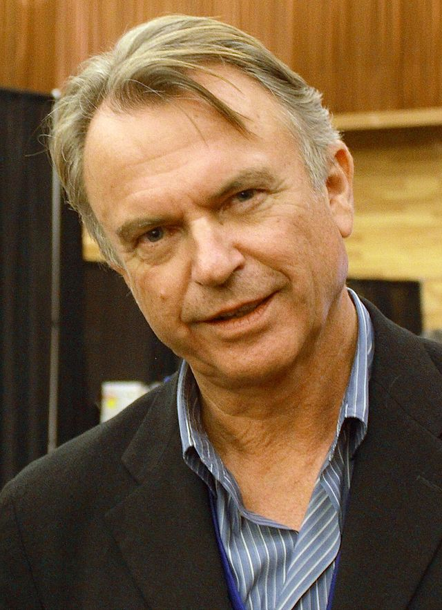

-REPARTO-


Jeff goldblum - Ian Malcolm
El Dr. Ian Malcolm es un matemático que se especializa en una rama de las matemáticas conocida como la "Teoría del caos", lo que lo lleva a su autodescripción como un "caótico". Es conocido principalmente por su participación altamente publicitada en el incidente de Isla Nublar de 1993, siendo la primera persona en hablar abiertamente sobre esos eventos. En menor grado, es conocido por su participación en el incidente de Isla Sorna en 1997 y su libro, Dios Crea a los Dinosaurios, sobre las formas en que la extinción se relaciona con la teoría del caos y otras disciplinas matemáticas. Debido a su participación en la historia de la des-extinción, sus opiniones sobre temas bioéticos son muy respetadas por el público y el gobierno de los Estados Unidos.
Laura Dern - Dra. Ellen Degler
La Dra. Ellen "Ellie" Degler (apellido de soltera: Sattler) es una paleo-botánica y autora de ciencia de no ficción. Es mejor conocida por su trabajo junto al paleontólogo Alan Grant, y hasta cierto punto por ser testigo del incidente de Isla Nublar en 1993, del que ha intentado distanciarse.
Richard Attenborough - Dr. John Alfred Hammond
El Dr. John Alfred Hammond, (o John Parker Hammond) (1913-1997/98), fue un empresario y fundador, director ejecutivo y presidente de International Genetic Technologies, Inc. y más tarde un activista de los derechos de los animales des-extintos. Es mejor conocido por planificar y construir parcialmente el revolucionario parque temático Jurassic Park, que finalmente se convirtió en Jurassic World. Hammond supervisó la des-extinción de la primera vida prehistórica, así como los orígenes de la hibridación genética avanzada, y se considera que fue un actor clave en la era genética temprana
Sam Neill - Dr. Alan Grant
El Dr. Alan Grant es un paleontólogo especializado en la evolución y biología de Dinosaurios Deinonicosaurianos. Es también conocido por sus aclamados libros, Dinosaur Detectives y The Lost World of the Dinosaurs, así como por su participación con International Genetic Technologies en los incidentes de 1993 y 2001 en las islas costarricenses de Nublar y Sorna respectivamente.
-DINOSAURIOS-
Tyrannosaurus rex
Frecuentemente conocido como «T. Rex». El soporte animatrónico creado por Winston pesaba 7900 kilogramos y tenía una longitud de 12 metros. En opinión del paleontólogo Jack Horner, esto era «lo más cercano que haya visto a un dinosaurio viviente». El modelo fue creado con base al movimiento del dinosaurio, y sus rugidos provinieron de la mezcla de sonidos resultante de una cría de elefante, un aligátor y un cocodrilo. Para emular su respiración recurrieron al sonido de la respiración de una ballena. Para la escena en la que el Tyrannosaurus desgarra a un Gallimimus, se usó una pista de sonido en la que un perro ataca una pelota.
Velociraptor
También conocido como «raptor». Winston explicó que no se habían basado en la especie Velociraptor mongoliensis descrita por las fuentes científicas para recrear al dinosaurio, sino en la especie Deinonychus. Bajo excusas estrictamente estéticas relacionadas con las escenas de acción de la película, Spielberg ordenó al equipo de diseño que aumentara el tamaño de los velociraptores para que así midieran unos 10 pies (3 m) de altura; poco antes del lanzamiento de la película, científicos descubrieron un ejemplar de un Utahraptor, parecido al velociraptor diseñado por Spielberg, a lo que Winston bromeó: «nosotros lo hicimos, pero ellos lo descubrieron».
Dilophosaurus
Fue creado con menores dimensiones con respecto a las del ejemplar real para evitar que la audiencia lo confundiera con los velociraptores. Su habilidad para escupir fluidos venenosos es ficticia. Para recrear sus sonidos vocales combinaron los sonidos provenientes de un cisne, un halcón, un mono aullador y una víbora de cascabel.
Triceratops
Tuvieron una breve aparición en la película, por sugerencia de Winston. Winston también creó una cría de Triceratops para Ariana Richards, sin embargo la escena que mostraba la interacción entre este espécimen y la actriz fue descartada del montaje final.